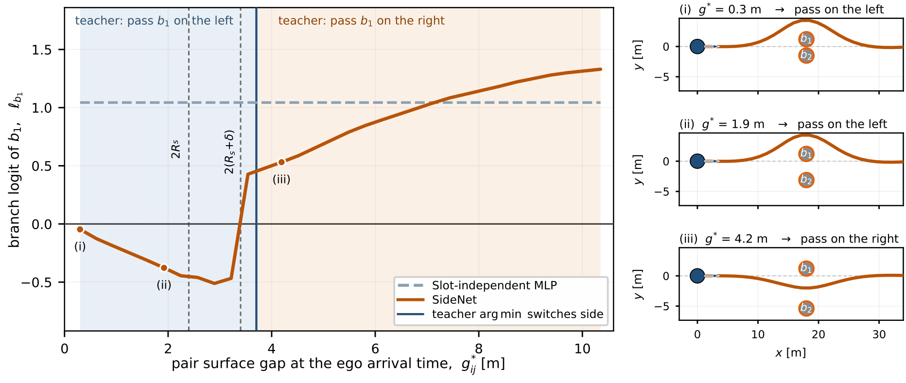

Multimodal TC-CBF MPC enumerates every left/right combination of the decision-critical
obstacles—K = 2Nb = 16 parallel OCPs.
SideNet-MPC keeps only two: the side combination proposed by a graph network, and the
decision executed at the previous step. The lower measured cost is executed.
(a) Block structure. The expert solves all K = 16 TC-CBF
constrained OCPs per control period and executes the minimum-cost mode. SideNet-MPC predicts one
avoidance side per branch obstacle, keeps the previously executed decision as a second candidate,
and executes the lower-cost of only two OCP solutions.(b) One planning step of the same scene. Candidates in grey; executed
trajectory in red (expert) and blue (SideNet-MPC). Both commit to the same maneuver — the
expert pays sixteen solves for it, the student two.
Homotopy modes
Each sign assignment fixes the left/right side of every branch obstacle and yields one
TC-CBF constrained OCP; the executed mode is the measured minimum.
(a) Two branch obstacles, K = 22. The four sign
assignments give distinct optimal trajectories whose costs are of comparable magnitude, so the
choice is not resolved by local optimization alone.(b) Four branch obstacles, K = 24. The same
enumeration already costs sixteen solves per control period. This exponential budget is what the
learned proposal replaces.
Simulation environment
Expert data and the randomized evaluations use the same 250 m × 40 m corridor.
Training uses the 100-obstacle mix only; denser scenes are out of distribution.
Full course. 250 m × 40 m, 30 static (gray) and 70 dynamic (orange) obstacles. The vehicle starts at (0,0), aligned with +x, and tracks y = 0 toward (250,0). Dashed circles mark the obstacle-free neighborhoods of the start and goal.Start region. Enlargement of the boxed stretch. Arrows show the sampled constant-velocity headings of the dynamic obstacles.
SideNet, the mode proposer
The Nb branch slots form a complete graph. A single edge-conditioned
message-passing layer carries the coupling that no per-obstacle feature can express.
SideNet. A shared backbone embeds each 14-dimensional slot feature
zi (eight obstacle, six ego) as hi, and every pair
carries six edge features eij — among them the surface gap predicted
at the shared encounter time t*ij, and flags against
wh = 2Rs and
ws = 2(Rs + δ). One residual layer
sums the gated messages over j ≠ i and adds an update back onto
hi. A shared head emits one logit ℓi per slot,
positive meaning pass on the right; the logit signs define the proposed mode
mnn.
Closed-loop videos
Every controller in a clip sees the same traffic. Playback is accelerated.
Expert: 16 solves. SideNet-MPC: 2 solves.
Same overtaking scene, four controllers at matching times. Expert (16 candidates) and SideNet-MPC (2) take the swerve; both bearing rules stay in the pass-through mode.
Monte Carlo seed 618 — Expert · SideNet-MPC · Bearing, 2 cand.
One Monte Carlo seed, three controllers. Expert (16 candidates) and SideNet-MPC (2) thread the same traffic. An early wrong side drives the bearing rule into the wall at 56.5 s.
Clips start automatically as they scroll into view.
Case studies
The overtaking scene and one Monte Carlo seed from the manuscript.
Overtaking, closed loop. Expert and SideNet-MPC choose the same topology and produce nearly identical maneuvers. The bearing rule inside the same two-candidate deployment collides (cross); the single-candidate rule brakes behind the pair and arrives late.One Monte Carlo seed, three controllers. Expert (16 candidates) and SideNet-MPC (2) thread the same traffic. An early wrong side drives the bearing rule into the wall at 56.5 s.
What the GNN is for
A slot-independent network cannot change the lead-obstacle side when a neighbor
blocks the preferred gap. SideNet carries that pair gap on its edges.

Side decision against the pair gap.
The partner b2 is slid away from the fixed lead obstacle
b1, so only g* varies.
Left: branch logit ℓb1 of SideNet and of the
slot-independent MLP (positive: pass b1 on the right).
Shading is the expert's side; the solid line is its switch; dashed lines mark
wh = 2Rs and
ws = 2(Rs + δ).
The MLP stays flat at +1.044; SideNet changes sign between 3.22 m and
3.54 m, next to ws = 3.4 m. The expert
switches just above that, between 3.54 m and 3.87 m.
Right: scenes at g* = 0.3, 1.9 and 4.2 m,
each with the mode SideNet proposes — also the expert's minimum-cost mode.
Density sweep
300 seeds per cell, 7,200 closed-loop rollouts in this sweep. Training used the
100-obstacle setting only; 120–140 are out of distribution.
Success relative to the expert. 300 seeds per cell. Training used the 100-obstacle setting only; 120–140 are out of distribution. SideNet-MPC keeps 64–75% of expert success with 2 solves instead of 16; the one-candidate bearing rule retains almost none.
Success relative to the expert [%] over 300 seeds. Expert is 100 in every column. The last row uses one candidate and one OCP; every other row uses the two-candidate deployment.
Configuration
100
120
130
140
Expert (16 solves)
100
100
100
100
SideNet-MPC
75
75
71
64
Slot-independent MLP
66
69
58
51
Slot-independent MLP, wide
71
71
53
49
Bearing, 2 cand.
65
56
47
27
Bearing, 1 cand.
2
0
0
0
Mean wall-clock time per control period at the training density (uncontended, Intel Core Ultra 7 270K, five seeds). SideNet-MPC includes the network forward pass.
Controller
OCPs
1-core [ms]
16-thread [ms]
Rel. CPU
Expert (16 solves)
16
300
47.5
1.00
SideNet-MPC
2
28.1
—
0.09
The other two-solve rows share the same OCP budget. SideNet-MPC is about 11× less CPU work than the sequential expert and 1.7× lower latency than the 16-thread batch, on one core instead of sixteen.